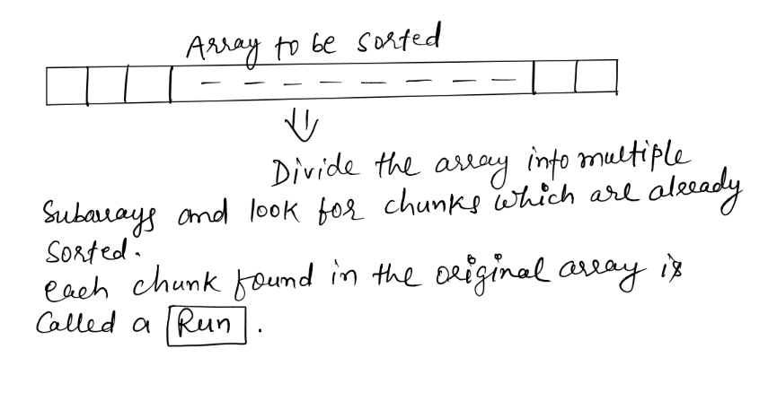
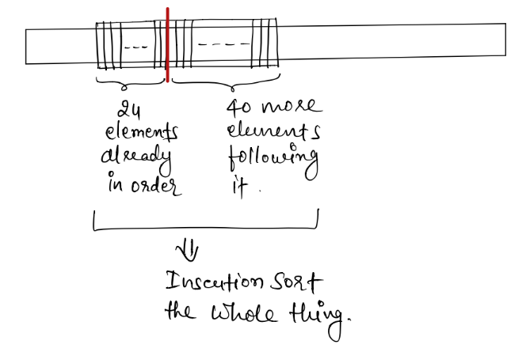
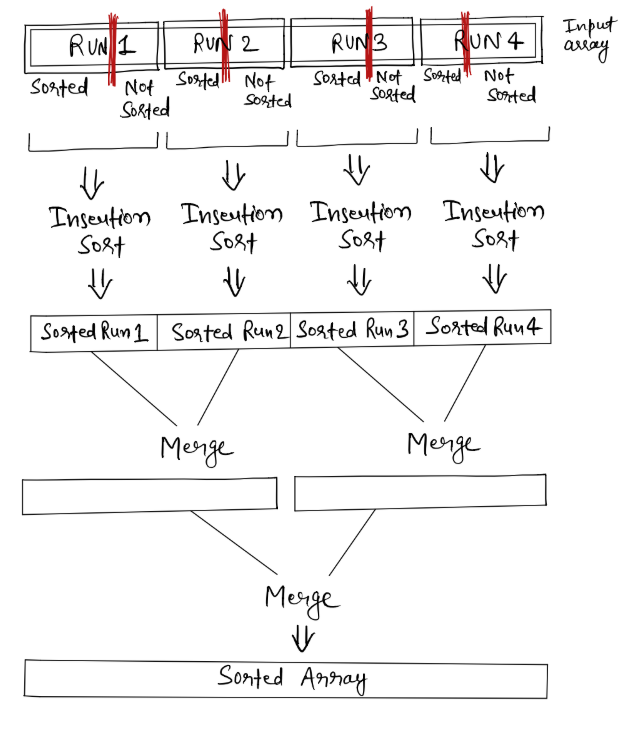

Prerequisite: Insertion sort, Merge sort, and Quicksort
Now Tim sort uses above two properties of Insertion sort and Merge sort, and creates a hybrid of the two.
So Tim sort uses ideas from Insertion sort and Merge sort, and here is how it works - 
Now these Runs can be of any size, as sorted data in an input array can be found in any size.
The idea of Tim sort is based on the fact that real world input data often has this ordered chunks of data in it. It could be ordered in increasing or decreasing order. The idea is to merge the sorted chunks of data to get complete array sorted, and merging is done using merge procedure of Merge sort (so that is where Tim sort borrows idea from Merge sort)
Now the problem is, not everything in input array can be divided in ordered chunks of subarrays, as there will be portions in input array with random data in it, which is not sorted in any order, and that's where Insertion sort comes to rescue. The idea is to fix a minimum size of Runs (Subarrays that will be merged). Usually the minimum size of a Run is chosen as 64 or 32. Lets go with 64 size here. Let's call minimum size of a Run Minrun hereafter.
Minrun are chosen by keeping two things in mind -
Now we find this ordered sequence of data in input array, of sizes as close to Minrun (64) as possible, and then we take rest of the elements following it (or from either side of it), to complete a subsequence of size Minrun, and then we sort it using Insertion sort.
For example, if we find a subarray of size 24 which is already sorted in some order, then we take 40 more elements following it, and then Insertion sort it. 
The protion of array which is already ordered, could be found ordered either in ascending or descending order, if ascending order - OK, if descending order - then we simply reverse it.
As stated earlier, Insertion sort works best when -
Now when we get a lot of these Runs which are sorted using Insertion sort, we merge them just like we merge sorted subarrays in Merge sort. 
Time Complexity:
Space Complexity: O(n)
Stability: Yes
Uses:
Timsort vs Quicksort:
When compared with Quicksort, Timsort has below advantages:
Quicksort's advantage over Timsort is that it works really fast for primitive array, because it utilizes processors memory caching abilities very well. It accesses a lot of near by elements, which can be accesses really really fast due to array's memory locality for primitive data.
For non-primitive data, arrays store addresses of objects, and actual objects are at different locations in heap section of memory, which makes accessing it slower compared to primitive data, which inturn makes the Quicksort algorithm slower, as it access a lot of near by elements.
Checkout Python and Java's library implementations of Timsort.
Have a question or comment about this post, write me at njha.sde@gmail.com